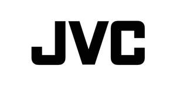

Trade Mark Journal No.2025/051 19 December 2025
UK00004309604 12 December 2025 (8)

- Class 8
- Tweezers; braiders [hand-held ones only]; manual looms; hoes [hand-held]; digging forks [spading forks]; lawn rakes [hand-held ones only]; lasts for shoe-making [hand-held ones only]; electric flat irons; electric razors and electric hair clippers; hair styling irons; curling tongs; hair straightening irons; crimping irons; hand implements for hair curling; electric hair curlers, hand implements; electrically heated hair curlers, hand implements; non-electric hair curlers, hand implements; laser hair removal apparatus, other than for medical purposes; electrolysis apparatus for hair removal; pedicure sets; eyelash curlers; manicure sets; bladed or pointed hand tools and swords; hand tools, hand operated, other than bladed or pointed hand tools; egg slicers, non-electric; Katsuo-bushi planes [non-electric planes for flaking dried bonito blocks]; can openers, non-electric; spoons; cheese slicers, non-electric; pizza cutters, non-electric; forks [cutlery]; dressmakers' chalk sharpeners; fireplace bellows [hand-tools]; fire tongs; bludgeons; shaving cases; ice axes; diving knives; diving knife holders; palette knives.
JVCKENWOOD Corporation
Representative: Maucher Jenkins